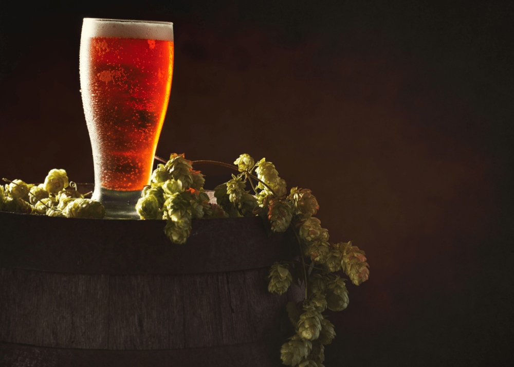

Cervezas Artesanales
Ale
Las cervezas ale tienen un período de acondicionamiento relativamente corto, por lo que pueden beberse en poco tiempo tras la fermentación. La ale es una cerveza muy sabrosa y nutritiva, en la edad media era una fuente de hidratación y nutrición ya que en algunas zonas de carencia de agua se consumían durante todo el día. Existen cervezas ale de muchos tipos, pero las más famosas son las inglesas y las alemanas.
La principal caracteristica de las cervezas ales es la utilización de levaduras de fermentación alta. Se suelen elaborar entre 18 y 25º. Las levaduras asciende a la superficie del mosto durante la fermentación lo que permite la creación de muchos ésteres y otros compuestos que dan complejos sabores afrutados y malteados.
Ipa
Una IPA es una cerveza de alta graduación alcohólica (entre 5º y 7º), amargor y aroma intensos y cierta complejidad en el paladar. El nombre hace referencia a India Pale Ale, un estilo cervecero que se caracteriza por la alta concentración de lúpulo.Pero, más allá de las características de la cerveza IPA, lo que la hace tan especial es su historia.
En 1639, la Compañía Británica de las Indias Orientales consiguió establecerse en la India para capitalizar el comercio de especias. Con el intercambio comercial comenzaron las idas y venidas. Una travesía que podía alargarse más de 300 días, rodeando el continente Africano, y que suponía atravesar cuatro zonas climáticas distintas. Sin refrigeración ni pasteurización posible, las cervezas se echaban a perder antes de llegar a la mitad del camino. Y a partir de ahí, el viaje se hacía mucho, pero que mucho más largo.
La solución fue tan sencilla como brillante: aumentar la graduación alcohólica y añadir una mayor cantidad del lúpulo, del que ya se conocían sus propiedades antisépticas y conservantes. Este ingrediente dio a la cerveza un peculiar sabor, mucho más amargo y un aroma intenso. El resultado fue un estilo de cerveza no solo capaz de sobrevivir a la travesía, sino también a los 90 años del Raj Británico. El fenómeno craft americano comenzó a recuperar este capítulo de la historia cervecera popularizando de nuevo el consumo de las IPAS, que viven hoy su máxima expresión creativa.